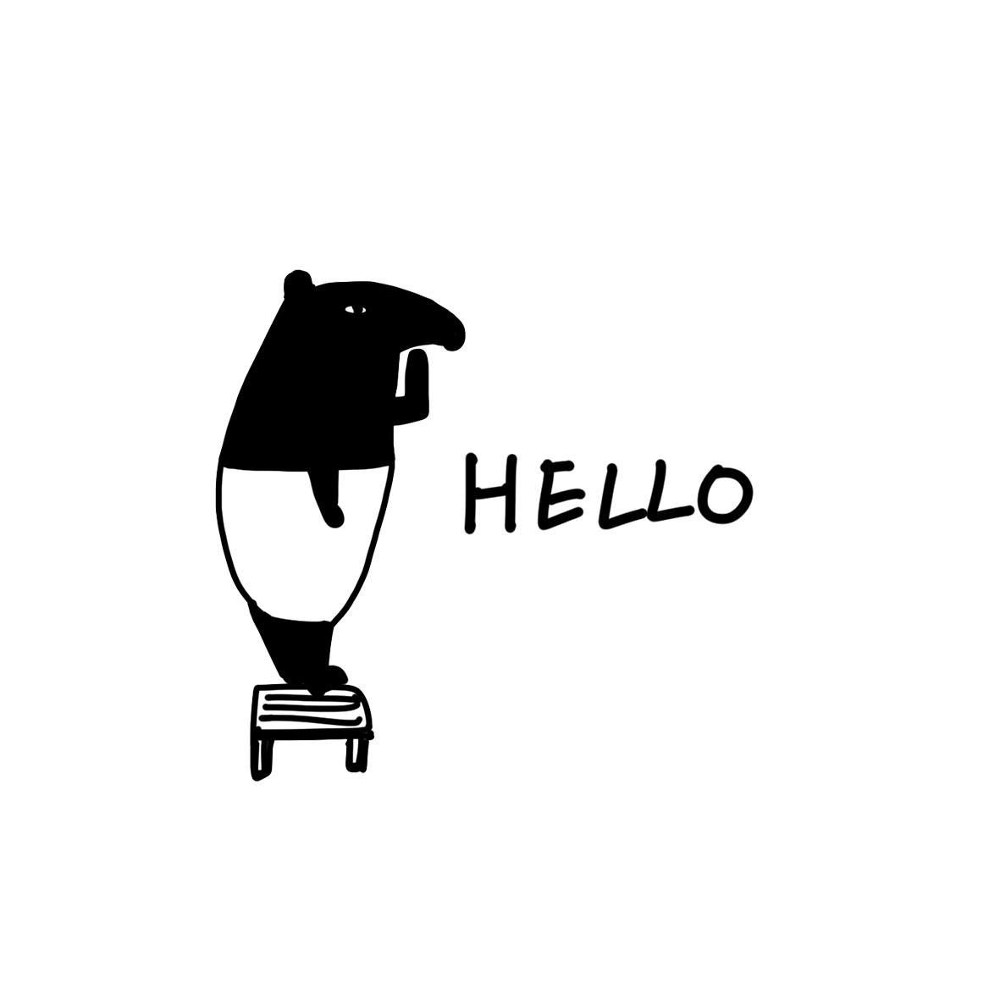

如果你習慣天天逛Facebook，常關注圖文插畫類書籍，或喜歡購買LINE的付費貼圖，那麼，你一定看過Cherng的作品。純粹的黑白色調、簡單線條、再加上一兩句犀利又幽默的點評，短短幾年期間，「馬來貘」插畫家Cherng在台灣插畫界引起一陣旋風。
作品特色
- 以簡單的黑白線條與簡潔有力的手寫標題來繪製作品，其插畫內容常使用馬來貘、圓仔、小貘等自創角色作為主角。
- 觀察生活周遭所發生的事情，作為創作時的靈感與素材。
長江後浪推前浪
「我很幸運，是早期出來畫圖文的，所以起來得很快，可是現在網路最流行的是影像，像很多受歡迎的youtuber拍的影片。」
Cherng最大的優勢就在於出發時間點領先其他圖文作家一步，並且腦袋裡似乎擁有各式各樣的鬼點子，讓他的作品總是能使人會心一笑。近期，他推出了「國插週報」，每週以不同的主題向網友徵求素材，並將故事繪製成週報形式，每篇都引起高熱度討論。
馬上來瞭解Cherng!
Cherng，本名楊承霖。因在Facebook上分享自己創作的馬來貘LAIMO黑白系列的特色插圖而走紅，並且有了馬來貘的稱號。